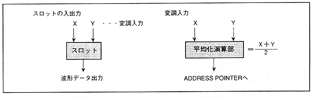

Two or more slots are connected in order to configure FM speech synthesis. How to calculate "MDXSL" and "MDYSL" (6 bits each) is explained.
When connecting two slots, if the slot on the modulation side (modulator) is M, the slot on the modulation side (carrier) is C, and the answer of MC is J,
M-C = J. . . . . 4.1 type
It will be. The value of the most significant bit (MSB ... 6th bit) of "MDXSL" and "MDYSL" varies depending on the obtained J value. The conditions are shown below.
● Condition 1 When J ≧ 28
- J value is converted to a hexadecimal 5-bit value.
- Set MSB (6th bit) to "0B" for the latest sample.
Set to "1B" for past samples.
● Condition 2 When J <0 (J is negative)
- 32 + J is calculated (calculated in decimal).
- Next, convert the above value into a hexadecimal 5-bit value.
- Set MSB (6th bit) to "0B" for the latest sample.
Set to "1B" for past samples.
● Condition 3 When the value of J does not apply to either Condition 1 or Condition 2
- J value is converted to a hexadecimal 5-bit value.
- Set MSB (6th bit) to "1B" for the latest sample.
Set to "0B" for past samples.
In order to actually implement FM speech synthesis, note the following points.
Figure 4.32 Slot averaging operation
